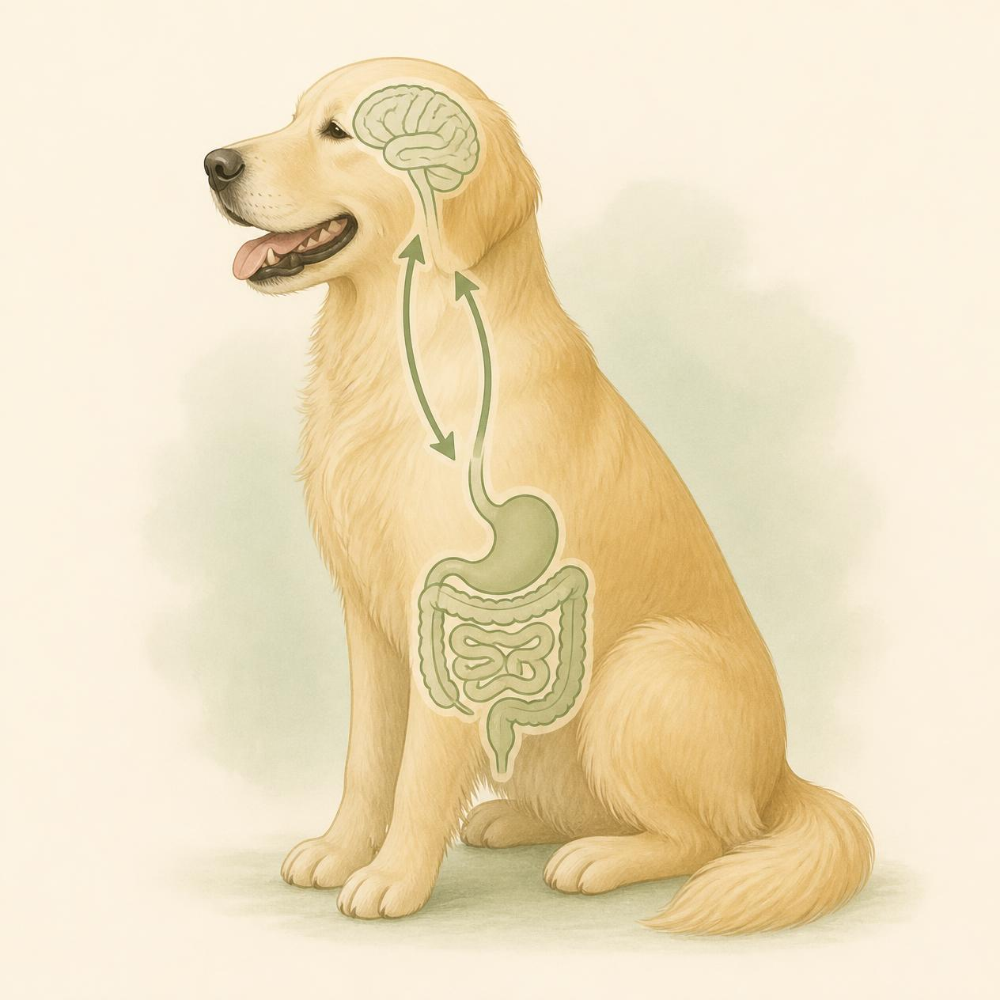
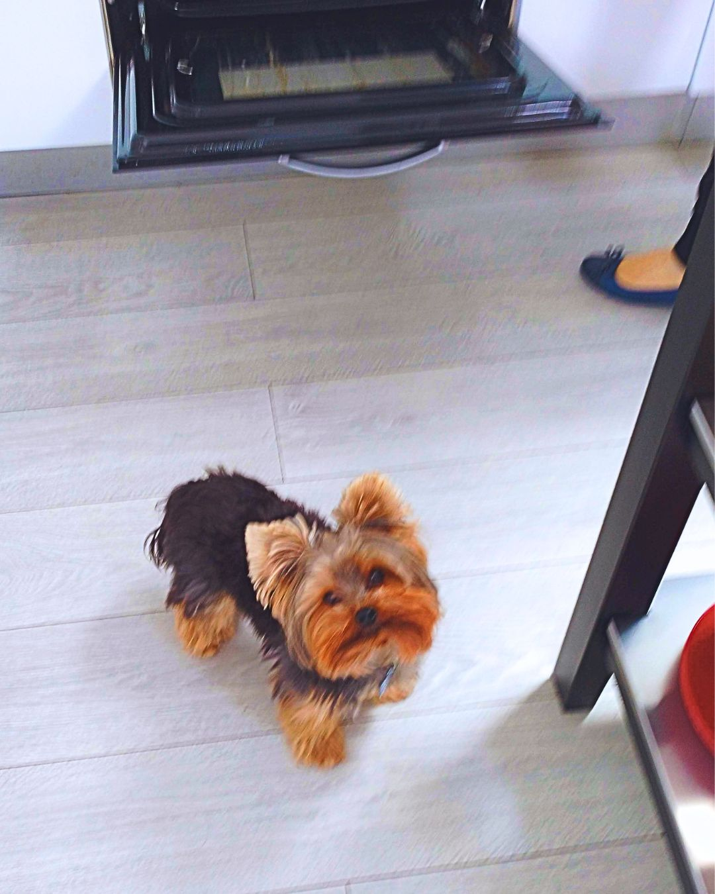
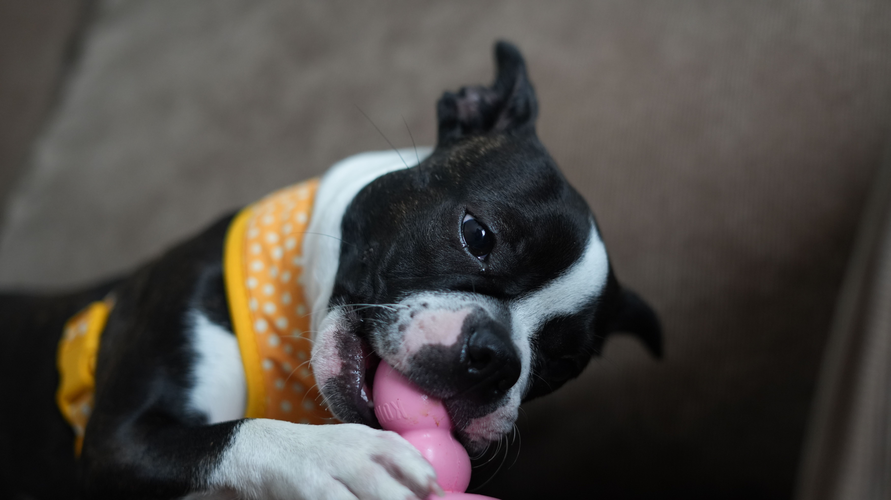

The summer holidays are often a joyful time of year. We spend more time outdoors, gather with family and friends, enjoy barbecues, take trips away, and make the most of the longer days.
Our dogs are often part of those moments too. We love including them because they are family, and sharing food, adventures, and time together is one of the ways we show that love.
But during the holidays, even small changes in daily life can add up — and dogs' bodies and emotions notice those changes more than we realise.
It's Rarely Just the Food
One of the easiest assumptions to make when a dog develops soft stools or seems a little unsettled is that something is wrong with their regular food. Often, guardians wonder whether they need to change diets or whether the food they've been feeding is no longer suitable.
Sometimes the diet does need reviewing. But during the holidays, it's worth remembering that a dog's usual food may not be the main reason for these changes.
- Feeding schedules shift.
- Activity levels change.
- Dogs may receive more treats than usual, meet unfamiliar people, travel to new places, or spend longer periods in busy, noisy environments.
Together, these changes can influence both digestion and behaviour.
One small example is meal timing. Dogs are remarkably tuned to daily routines, and for those with sensitive stomachs, delaying breakfast or dinner by an hour or two may be enough to cause mild digestive discomfort. Some dogs may begin licking their lips or appearing restless around mealtimes.
A balanced, appropriate diet remains the foundation of good health. But what a dog eats is only one piece of the puzzle. During the holidays, factors such as stress, sleep, routine, exercise, and the environment can all interact with nutrition, influencing both digestion and behaviour through what is known as the gut–brain axis.

The Gut–Brain Axis: Why Body and Mind Are Connected
The gut and the brain are in constant communication through what scientists call the gut–brain axis. This means that changes affecting one system can also influence the other.
During the holidays, a dog's routine often changes in several ways at once:
- Different meal times
- Altered sleep patterns
- More visitors
- Unfamiliar places
- Changes in activity levels
- Increased excitement
For many dogs these are enjoyable experiences. But for others — particularly dogs who are anxious, reactive, or easily overwhelmed — these changes may be harder to cope with.
We often think of anxiety as purely behavioural, but it also triggers physical responses throughout the body. Stress hormones, gut motility, appetite, and communication between the brain and digestive system can all be affected.
This is one reason why some dogs develop loose stools, reduced appetite, or stomach discomfort during periods of emotional stress.
Emerging research suggests that the gut microbiome also plays an important role. More than 80% of the body's serotonin is produced within the gastrointestinal tract, and the microbes living there appear to influence this process. Serotonin is involved in regulating mood, digestion and sleep, while also contributing to communication between the gut and the brain.
A 2025 study found that gut microbiome composition was associated with anxiety and aggression scores in companion dogs. Although the study could not establish cause and effect, it identified a specific genus of bacteria, Blautia, that was consistently linked to anxiety across its analyses.
Imagine a dog who is already prone to anxiety or reactivity. During the holidays they may be:
- Sleeping less
- Meeting unfamiliar people
- Walking at different times
- Eating later than usual
- Travelling more often
- Experiencing far more excitement than normal
None of these changes automatically cause behavioural problems. But together they may make it more difficult for that dog to cope with everyday challenges. In some dogs this may appear as barking, reactivity or restlessness. In others, it may appear as reduced appetite or digestive upset.
Sometimes, the body is simply responding to a period of increased physical and emotional demand.
Rather than pointing to a simple cause-and-effect relationship, this growing body of research reminds us that a dog's emotional experiences and digestive health are closely interconnected. This is why I encourage guardians to look beyond individual symptoms.
A reactive dog who seems more sensitive during the holidays, or an anxious dog who suddenly develops loose stools, may not be experiencing two separate problems. Sometimes, both are simply different expressions of the same underlying challenge: a body trying to adapt to a changing environment.
Food Is Love, Especially During the Holidays
Part of what makes summer holidays feel different is that we often feed our dogs more. Not carelessly, but because food is one of the ways we include them in the moment.
A piece of chicken drops at the barbecue. A guest offers a biscuit. Someone cannot resist that hopeful face near the picnic table. None of this comes from a bad place — quite the opposite. But it does mean that the small opportunities for extras multiply during the holidays, often without us noticing how many have added up by the end of the week.
Thor's Cheese Story
I see this with my own dog, Thor. If I'm preparing anything with cheese, he appears almost instantly, no matter where he is in the house. If he's asleep in his bed in the kitchen, he simply lifts his head and gives me the sweetest look, hoping I'll share just a little.

For a long time, whenever Thor showed signs such as lip licking or mild stomach discomfort, I found myself looking at his meals and wondering whether his food was the problem. It wasn't until I stopped giving him small pieces of cheese that I realised the symptoms disappeared, even though nothing else in his diet had changed.
These days, if I want Thor to feel included, I simply wait until he's eating his own meal or offer one of his favourite freeze-dried treats instead. He still gets to join in the moment, but without the upset stomach.
Not every digestive problem begins with diarrhoea or vomiting. Repeated lip licking, swallowing, reduced appetite, or seeming uncomfortable around mealtimes can sometimes be early signs that something isn't quite right.
When you notice these changes, ask yourself not only "What did my dog eat?" — but also "What has changed this week?"
What Can You Do?
Understanding these invisible changes does not mean you need to control every moment of summer. It simply means knowing where to look when something feels off.
Keep One Routine Steady
Even if your holiday schedule changes, try to keep feeding times reasonably consistent. Dogs thrive on predictable patterns, and this can be particularly helpful for those with sensitive stomachs.
Keep Hydration in Mind
I cannot overstate the importance of hydration, especially during the summer months. Water plays an essential role in digestion, transporting nutrients, supporting circulation, and regulating body temperature.
As a general guide, dogs often require around 1 ml of water per kcal of daily energy needs, or approximately 1 ounce of water per pound of body weight per day. These are estimates, as individual requirements vary depending on size, activity level, weather, and overall health.
For example, Thor needs approximately 165 kcal per day, meaning his estimated water requirement is around 165 ml daily. Remember, dogs obtain water from both drinking and their food — a dog eating dry food generally needs to drink more than a dog eating wet or fresh food. During hot weather, always ensure fresh water is available and pay attention to changes in your dog's drinking habits.
Encourage Calm Activity
If the weather is mild and your dog enjoys walking, a relaxed sniffing walk can be one of the best ways to help them unwind. Sniffing provides mental stimulation while allowing dogs to gather information about their environment.
Provide a Quiet Resting Place
Position your dog's bed somewhere away from busy walkways and constant foot traffic. If you have children or guests visiting, encourage everyone to let your dog rest undisturbed. Just like us, dogs need good-quality sleep to support both physical health and emotional wellbeing.
Offer Enrichment at Home
Interactive feeders, puzzle toys, food-dispensing toys and scent games are excellent ways to keep dogs mentally engaged. Some can even be frozen, making them especially useful during warm weather.

For puppies and energetic dogs, simple enrichment such as a destruction box filled with scrunched newspaper and hidden treats encourages natural sniffing and problem-solving.
If Digestive Signs Appear
If your dog develops a mild stomach upset but is otherwise bright and comfortable, it may be sensible to avoid extra treats and offer smaller, more frequent meals of their usual diet — or a bland diet — for a day or two.
However, persistent watery diarrhoea, repeated vomiting, blood in the stool, marked lethargy, abdominal pain, or any signs of dehydration should always be assessed by your veterinarian.
Final Thoughts
As someone who loves both canine nutrition and behaviour, one of the biggest lessons I've learned is that the body rarely gives us simple answers. An upset stomach isn't always about the food. Restlessness isn't always about behaviour. Often, they're part of the same conversation.
The summer holidays remind us just how connected our dogs' bodies and minds really are. So the next time your dog seems a little "off," don't just look in the food bowl — look at your whole dog.
Need Personalised Support?
If your dog is experiencing ongoing digestive issues, changes in behaviour, or you're unsure how nutrition and lifestyle may be affecting them, I offer online consultations that look at the whole dog. Together, we can explore the factors that may be influencing your dog's health and behaviour and create a plan tailored to their individual needs.
Find out more →Reference
Pellowe, S. D., Zhang, A., Bignell, D. R. D., Peña-Castillo, L., & Walsh, C. J. (2025). Gut microbiota composition is related to anxiety and aggression scores in companion dogs. Scientific Reports, 15, Article 24336. https://doi.org/10.1038/s41598-025-06178-4